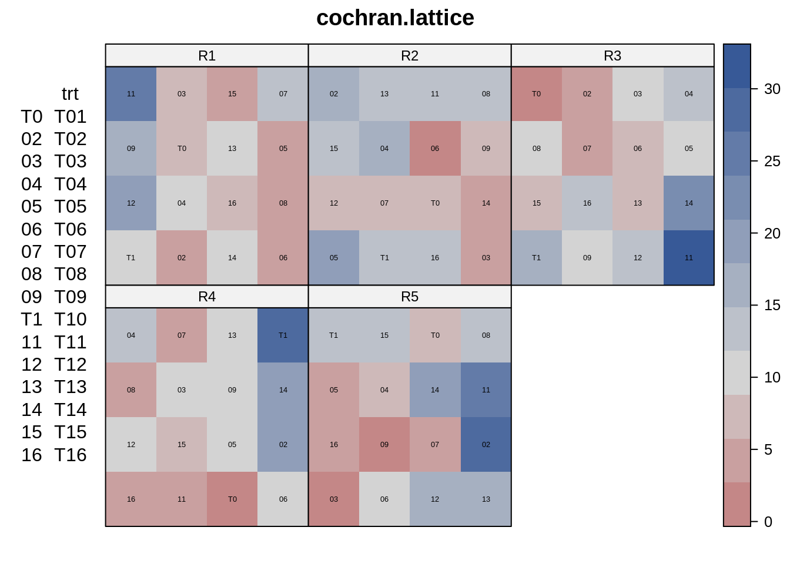
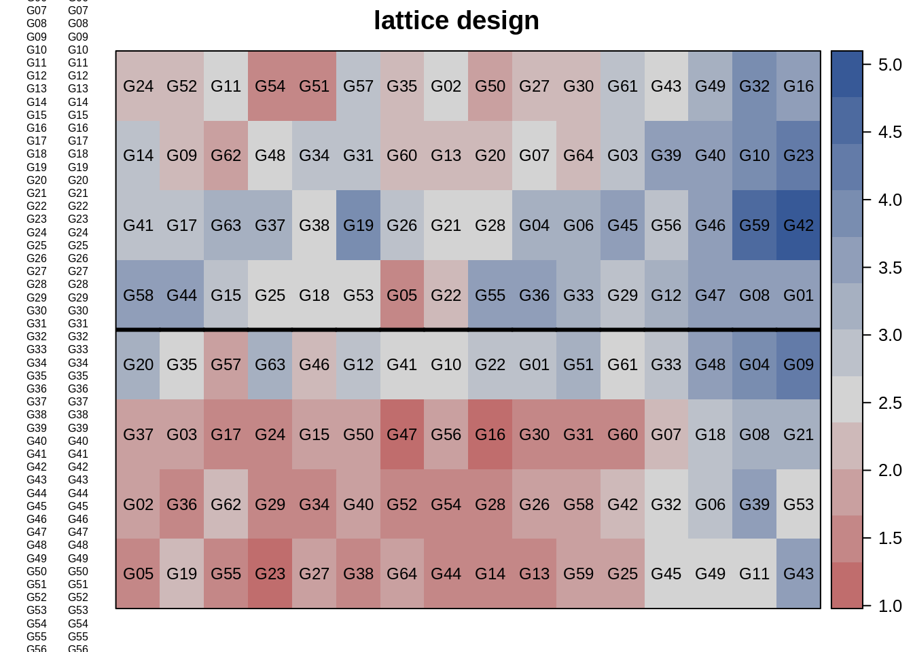
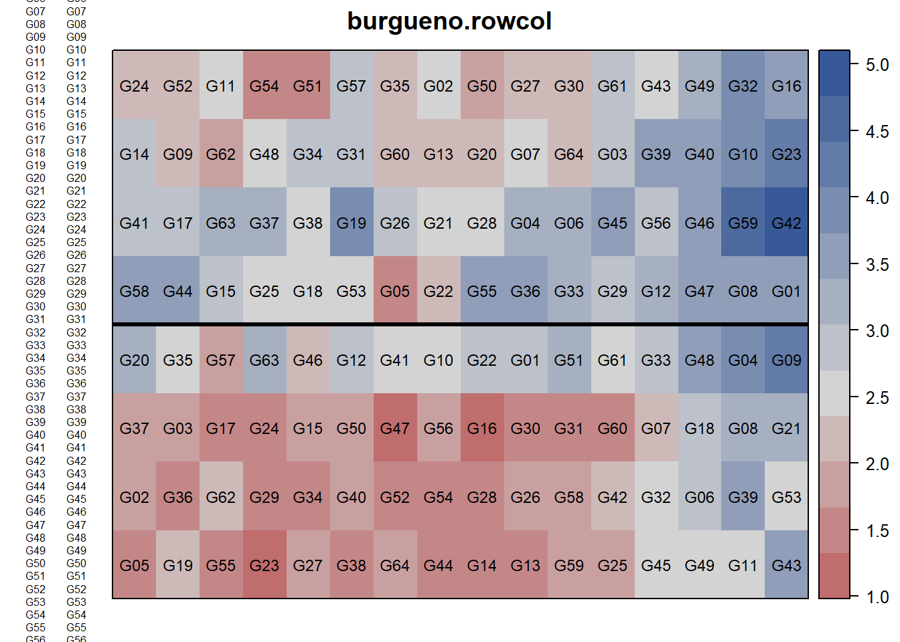
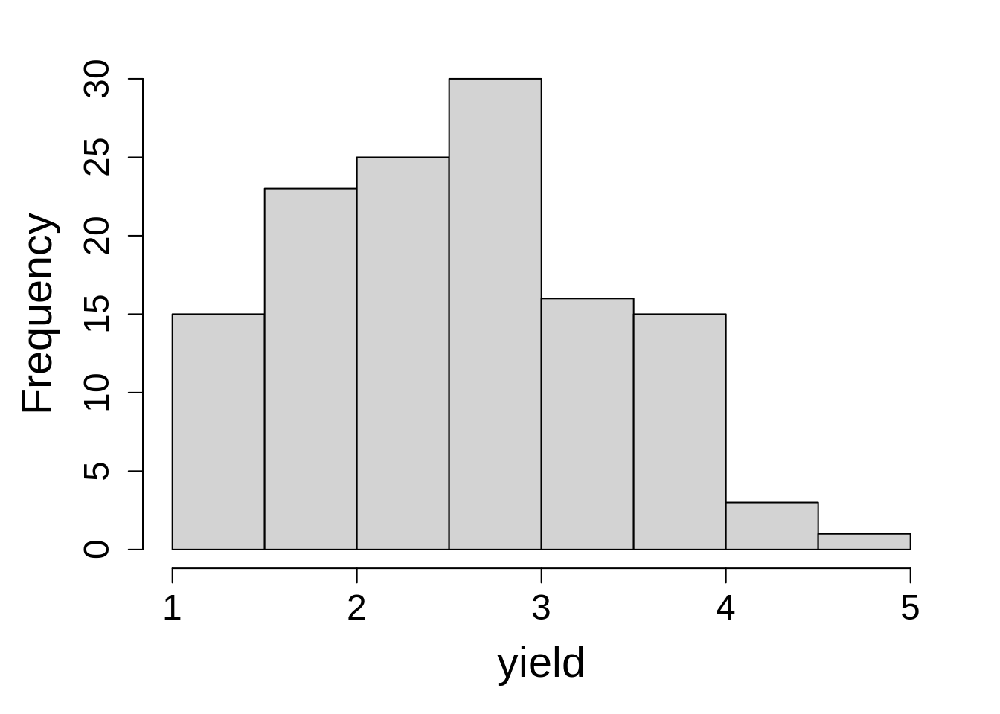
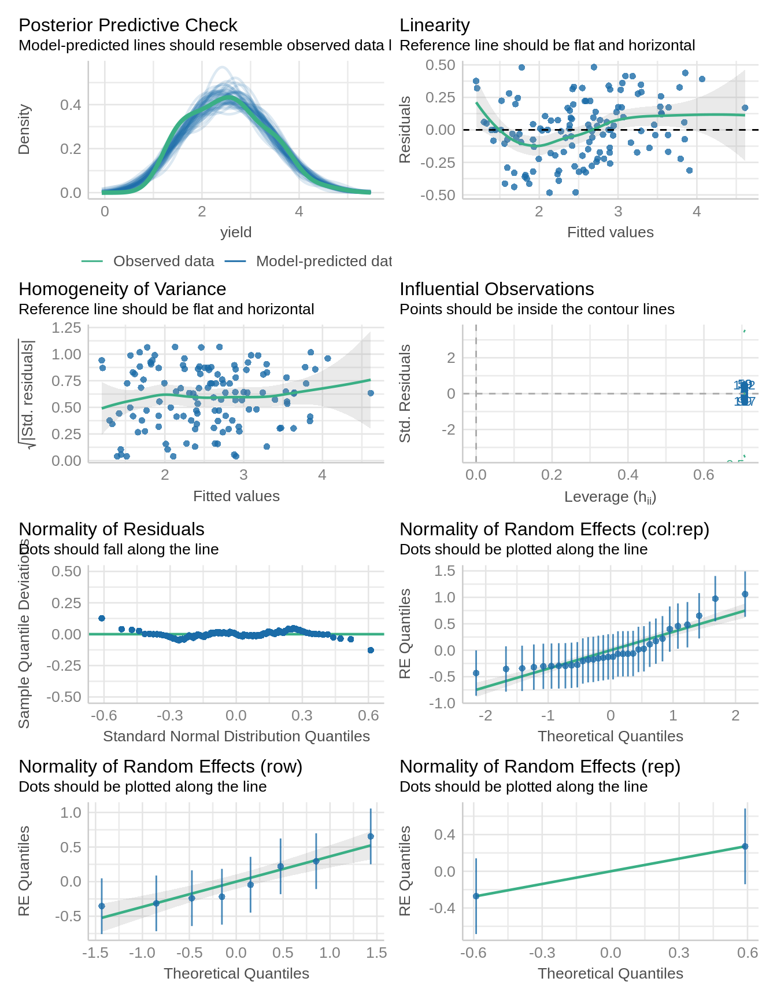

library(lme4); library(lmerTest); library(emmeans); library(performance)
library(dplyr); library(broom.mixed); library(agridat); library(desplot)10 Lattice Design
10.1 Background
Lattice designs are convenient for when there is a large number of treatments so that the block size is too big to control for spatial variation effectively. These lattice designs were first developed by Yates (1936) and later, alpha lattice designs were developed as an extension (Patterson and Williams 1976). A special feature of lattice designs is that the number of treatments, t, is related to the block size, k, in one of three forms: t = k2, t = k3, or t = k(k + 1).
Even though the number of possible treatments is limited, a lattice design may be an ideal design for field experiments with a large number of treatments.
Statistical model for lattice design:
\(Y_{ijk} = \mu + \alpha_i + \gamma_j + \tau_t + \beta_k + \epsilon_ijk\)
where, \(\mu\) is the experiment mean, 𝛽 is the row effect, 𝛾 is the column effect, and 𝜏 is the treatment effect.
10.2 Example Analysis
The data used in this example is from a balanced lattice experiment in cotton containing 16 treatments in a 4x4 layout in each of 5 replicates. The response variable in this data is the percentage of young flower buds attacked by boll weevils.
Let’s start the analysis firstly by loading the required libraries:
library(nlme); library(broom.mixed); library(emmeans); library(performance)
library(dplyr); library(agridat); library(desplot)Import data from agridat package. The data contains . This is a balanced experiment design
data(cochran.lattice)
dat2 <- cochran.lattice
head(dat2) y rep row col trt
1 9.0 R1 1 1 T10
2 20.3 R1 1 2 T12
3 17.7 R1 1 3 T09
4 26.3 R1 1 4 T11
5 4.7 R1 2 1 T02
6 9.0 R1 2 2 T04str(dat2)'data.frame': 80 obs. of 5 variables:
$ y : num 9 20.3 17.7 26.3 4.7 9 7.3 8.3 9 6.7 ...
$ rep: Factor w/ 5 levels "R1","R2","R3",..: 1 1 1 1 1 1 1 1 1 1 ...
$ row: int 1 1 1 1 2 2 2 2 3 3 ...
$ col: int 1 2 3 4 1 2 3 4 1 2 ...
$ trt: Factor w/ 16 levels "T01","T02","T03",..: 10 12 9 11 2 4 1 3 14 16 ...libs(desplot)
desplot(dat2, y~row*col|rep,
text=trt, # aspect unknown, should be 2 or .5
main="cochran.lattice")
data(burgueno.rowcol)
dat <- burgueno.rowcol
head(dat) rep row col gen yield
1 R1 1 1 G05 1.5318
2 R1 1 2 G19 2.2211
3 R1 1 3 G55 1.4589
4 R1 1 4 G23 1.2436
5 R1 1 5 G27 1.8989
6 R1 1 6 G38 1.3366Here, we can use the desplot() function from the ‘desplot’ package to visualize the plot plan from lattice design.
# Two contiuous reps in 8 rows, 16 columns
desplot(dat, yield ~ col*row,
out1=rep, # aspect unknown
text=gen, shorten="none", cex=0.75,
main="lattice design")
10.2.1 Data integrity checks

10.2.2 Data integrity checks
str(dat)'data.frame': 128 obs. of 5 variables:
$ rep : Factor w/ 2 levels "R1","R2": 1 1 1 1 1 1 1 1 1 1 ...
$ row : int 1 1 1 1 1 1 1 1 1 1 ...
$ col : int 1 2 3 4 5 6 7 8 9 10 ...
$ gen : Factor w/ 64 levels "G01","G02","G03",..: 5 19 55 23 27 38 64 44 14 13 ...
$ yield: num 1.53 2.22 1.46 1.24 1.9 ...dat2$row <- as.factor(dat2$row)
dat2$col <- as.factor(dat2$col)
dat$row <- as.factor(dat$row)
dat$col <- as.factor(dat$col)hist(dat2$y, main = "", xlab = "yield")

m1_a <- lmer(yield ~ gen + (1|row) + (1|col:rep) + (1|rep),
data = dat,
na.action = na.exclude)
summary(m1_a) Linear mixed model fit by REML. t-tests use Satterthwaite's method [
lmerModLmerTest]
Formula: yield ~ gen + (1 | row) + (1 | col:rep) + (1 | rep)
Data: dat
REML criterion at convergence: 168.7
Scaled residuals:
Min 1Q Median 3Q Max
-1.1392 -0.4036 0.0000 0.4036 1.1392
Random effects:
Groups Name Variance Std.Dev.
col:rep (Intercept) 0.2189 0.4679
row (Intercept) 0.1646 0.4057
rep (Intercept) 0.1916 0.4378
Residual 0.1796 0.4238
Number of obs: 128, groups: col:rep, 32; row, 8; rep, 2
Fixed effects:
Estimate Std. Error df t value Pr(>|t|)
(Intercept) 2.325589 0.509444 4.216418 4.565 0.0091 **
genG02 0.349182 0.523392 38.995063 0.667 0.5086
genG03 0.371260 0.531293 41.034622 0.699 0.4886
genG04 0.475842 0.527614 43.470779 0.902 0.3721
genG05 -0.601225 0.513762 38.892580 -1.170 0.2490
genG06 0.574869 0.527284 40.643852 1.090 0.2820
genG07 0.244490 0.534996 42.592433 0.457 0.6500
genG08 0.606486 0.527879 43.602192 1.149 0.2569
genG09 0.010630 0.525899 42.747488 0.020 0.9840
genG10 0.509855 0.527357 43.301826 0.967 0.3390
genG11 0.463014 0.535708 42.977451 0.864 0.3922
genG12 0.340678 0.517892 43.399748 0.658 0.5141
genG13 -0.041178 0.483241 34.257292 -0.085 0.9326
genG14 0.132480 0.523679 39.142513 0.253 0.8016
genG15 0.385104 0.526349 43.013937 0.732 0.4683
genG16 -0.148379 0.483194 34.227894 -0.307 0.7606
genG17 -0.016143 0.536067 42.926995 -0.030 0.9761
genG18 0.358218 0.526325 42.993175 0.681 0.4998
genG19 0.734743 0.533892 41.978194 1.376 0.1761
genG20 0.212299 0.521319 40.753106 0.407 0.6860
genG21 0.150212 0.525313 39.814746 0.286 0.7764
genG22 -0.039713 0.497948 37.586406 -0.080 0.9369
genG23 0.325771 0.484472 34.701705 0.672 0.5058
genG24 -0.194686 0.524899 39.587776 -0.371 0.7127
genG25 0.202462 0.514979 39.325398 0.393 0.6963
genG26 0.089411 0.483188 34.221812 0.185 0.8543
genG27 0.218244 0.536631 43.262734 0.407 0.6862
genG28 -0.284235 0.524825 39.538457 -0.542 0.5911
genG29 0.047110 0.515184 39.470339 0.091 0.9276
genG30 -0.213561 0.484574 34.769665 -0.441 0.6621
genG31 -0.034873 0.535702 42.734026 -0.065 0.9484
genG32 1.000827 0.535020 42.606153 1.871 0.0683 .
genG33 0.252960 0.507660 40.377683 0.498 0.6210
genG34 0.242054 0.537217 43.562588 0.451 0.6545
genG35 0.213005 0.515262 39.472578 0.413 0.6816
genG36 0.362633 0.525014 42.290855 0.691 0.4935
genG37 0.282612 0.530472 40.615244 0.533 0.5971
genG38 -0.125437 0.537059 43.462082 -0.234 0.8164
genG39 1.261824 0.537018 43.466180 2.350 0.0234 *
genG40 0.346211 0.536855 43.369657 0.645 0.5224
genG41 -0.255692 0.522110 41.202626 -0.490 0.6269
genG42 0.744461 0.483144 34.195322 1.541 0.1326
genG43 0.489907 0.535381 42.795749 0.915 0.3653
genG44 0.445400 0.527076 43.156823 0.845 0.4027
genG45 0.728849 0.531497 41.172558 1.371 0.1777
genG46 0.008386 0.527720 43.541892 0.016 0.9874
genG47 -0.173693 0.525585 42.635003 -0.330 0.7427
genG48 0.364422 0.523287 41.600011 0.696 0.4900
genG49 0.283642 0.535631 42.924562 0.530 0.5992
genG50 -0.160189 0.534315 42.227391 -0.300 0.7658
genG51 0.127042 0.526978 43.139993 0.241 0.8106
genG52 -0.277455 0.534469 42.326672 -0.519 0.6064
genG53 -0.401069 0.525510 42.532998 -0.763 0.4496
genG54 -0.221400 0.533965 42.027349 -0.415 0.6805
genG55 0.479012 0.524627 42.079587 0.913 0.3664
genG56 0.232007 0.536959 43.388811 0.432 0.6678
genG57 -0.153493 0.526605 42.888008 -0.291 0.7721
genG58 0.545562 0.523508 41.715186 1.042 0.3034
genG59 0.691577 0.536175 43.006805 1.290 0.2040
genG60 -0.221321 0.517482 37.741262 -0.428 0.6713
genG61 0.205307 0.514087 39.066489 0.399 0.6918
genG62 0.341897 0.534904 42.530411 0.639 0.5261
genG63 0.701913 0.517290 40.377937 1.357 0.1823
genG64 0.066248 0.526946 40.462383 0.126 0.9006
---
Signif. codes: 0 '***' 0.001 '**' 0.01 '*' 0.05 '.' 0.1 ' ' 1
Correlation matrix not shown by default, as p = 64 > 12.
Use print(x, correlation=TRUE) or
vcov(x) if you need itdat$dummy <- factor(1)
m1_b <- lme(yield ~ gen,
random = list(dummy = pdBlocked(list(
pdIdent(~row - 1),
pdIdent(~rep - 1),
pdIdent(~col:rep)))),
data = dat,
na.action = na.exclude)
VarCorr(m1_b)dummy = pdIdent(row - 1), pdIdent(rep - 1), pdIdent(col:rep)
Variance StdDev
row1 0.1645986 0.4057076
row2 0.1645986 0.4057076
row3 0.1645986 0.4057076
row4 0.1645986 0.4057076
row5 0.1645986 0.4057076
row6 0.1645986 0.4057076
row7 0.1645986 0.4057076
row8 0.1645986 0.4057076
repR1 0.1916416 0.4377688
repR2 0.1916416 0.4377688
(Intercept) 0.2188853 0.4678517
col1:repR1 0.2188853 0.4678517
col2:repR1 0.2188853 0.4678517
col3:repR1 0.2188853 0.4678517
col4:repR1 0.2188853 0.4678517
col5:repR1 0.2188853 0.4678517
col6:repR1 0.2188853 0.4678517
col7:repR1 0.2188853 0.4678517
col8:repR1 0.2188853 0.4678517
col9:repR1 0.2188853 0.4678517
col10:repR1 0.2188853 0.4678517
col11:repR1 0.2188853 0.4678517
col12:repR1 0.2188853 0.4678517
col13:repR1 0.2188853 0.4678517
col14:repR1 0.2188853 0.4678517
col15:repR1 0.2188853 0.4678517
col16:repR1 0.2188853 0.4678517
col1:repR2 0.2188853 0.4678517
col2:repR2 0.2188853 0.4678517
col3:repR2 0.2188853 0.4678517
col4:repR2 0.2188853 0.4678517
col5:repR2 0.2188853 0.4678517
col6:repR2 0.2188853 0.4678517
col7:repR2 0.2188853 0.4678517
col8:repR2 0.2188853 0.4678517
col9:repR2 0.2188853 0.4678517
col10:repR2 0.2188853 0.4678517
col11:repR2 0.2188853 0.4678517
col12:repR2 0.2188853 0.4678517
col13:repR2 0.2188853 0.4678517
col14:repR2 0.2188853 0.4678517
col15:repR2 0.2188853 0.4678517
col16:repR2 0.2188853 0.4678517
Residual 0.1795838 0.423773310.2.3 Check Model Assumptions
Remember those iid assumptions? Let’s make sure we actually met them.
check_model(m1_a)
10.2.4 Inference
Estimates for each treatment level can be obtained with the ‘emmeans’ package. And we can extract the ANOVA table from model using anova() function.
anova(m1_a)Type III Analysis of Variance Table with Satterthwaite's method
Sum Sq Mean Sq NumDF DenDF F value Pr(>F)
gen 9.5245 0.15118 63 34.322 0.8418 0.7274Estimated marginal means
emmeans(m1_a, ~ gen) gen emmean SE df lower.CL upper.CL
G01 2.33 0.515 4.21 0.923 3.73
G02 2.67 0.515 4.21 1.272 4.08
G03 2.70 0.515 4.21 1.294 4.10
G04 2.80 0.515 4.21 1.399 4.20
G05 1.72 0.515 4.21 0.322 3.13
G06 2.90 0.515 4.20 1.497 4.30
G07 2.57 0.515 4.21 1.167 3.97
G08 2.93 0.515 4.21 1.529 4.33
G09 2.34 0.515 4.20 0.933 3.74
G10 2.84 0.515 4.20 1.432 4.24
G11 2.79 0.515 4.20 1.385 4.19
G12 2.67 0.515 4.19 1.263 4.07
G13 2.28 0.515 4.21 0.882 3.69
G14 2.46 0.515 4.20 1.055 3.86
G15 2.71 0.515 4.20 1.307 4.11
G16 2.18 0.515 4.21 0.775 3.58
G17 2.31 0.515 4.19 0.906 3.71
G18 2.68 0.515 4.21 1.281 4.09
G19 3.06 0.514 4.18 1.657 4.46
G20 2.54 0.515 4.20 1.135 3.94
G21 2.48 0.515 4.19 1.072 3.88
G22 2.29 0.515 4.21 0.883 3.69
G23 2.65 0.515 4.21 1.249 4.05
G24 2.13 0.515 4.19 0.727 3.53
G25 2.53 0.515 4.20 1.125 3.93
G26 2.42 0.515 4.21 1.013 3.82
G27 2.54 0.515 4.20 1.141 3.95
G28 2.04 0.515 4.20 0.638 3.44
G29 2.37 0.515 4.20 0.970 3.78
G30 2.11 0.515 4.19 0.708 3.52
G31 2.29 0.514 4.18 0.887 3.69
G32 3.33 0.515 4.20 1.923 4.73
G33 2.58 0.514 4.19 1.175 3.98
G34 2.57 0.515 4.21 1.165 3.97
G35 2.54 0.515 4.20 1.136 3.94
G36 2.69 0.515 4.20 1.285 4.09
G37 2.61 0.515 4.20 1.205 4.01
G38 2.20 0.515 4.21 0.797 3.60
G39 3.59 0.515 4.20 2.184 4.99
G40 2.67 0.515 4.21 1.269 4.07
G41 2.07 0.514 4.18 0.666 3.47
G42 3.07 0.515 4.21 1.668 4.47
G43 2.82 0.515 4.20 1.412 4.22
G44 2.77 0.515 4.20 1.368 4.17
G45 3.05 0.515 4.20 1.651 4.46
G46 2.33 0.515 4.21 0.931 3.74
G47 2.15 0.515 4.20 0.749 3.56
G48 2.69 0.515 4.19 1.286 4.09
G49 2.61 0.515 4.22 1.207 4.01
G50 2.17 0.514 4.19 0.762 3.57
G51 2.45 0.514 4.19 1.049 3.86
G52 2.05 0.514 4.19 0.644 3.45
G53 1.92 0.515 4.19 0.521 3.33
G54 2.10 0.514 4.18 0.700 3.51
G55 2.80 0.514 4.18 1.401 4.21
G56 2.56 0.515 4.20 1.155 3.96
G57 2.17 0.515 4.19 0.769 3.58
G58 2.87 0.514 4.18 1.467 4.28
G59 3.02 0.514 4.19 1.613 4.42
G60 2.10 0.516 4.22 0.702 3.51
G61 2.53 0.515 4.21 1.128 3.93
G62 2.67 0.514 4.18 1.264 4.07
G63 3.03 0.514 4.19 1.624 4.43
G64 2.39 0.515 4.19 0.988 3.80
Degrees-of-freedom method: kenward-roger
Confidence level used: 0.95